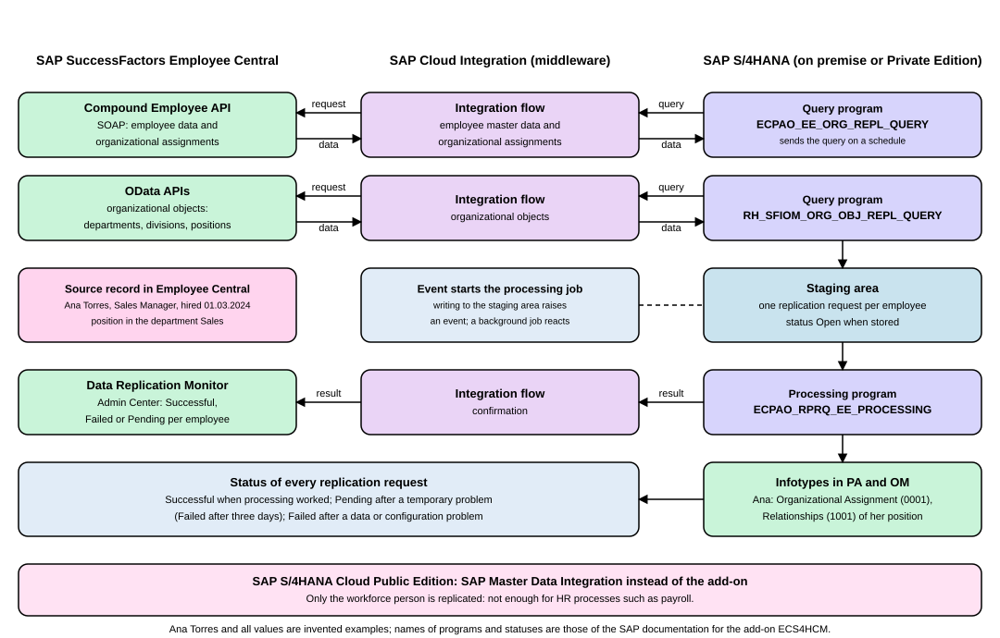

Employee Central to SAP S/4HANA Integration
|
This content was generated with the assistance of AI and should be verified against the official documentation before being relied on in production. |
In a company that keeps its people data in the cloud (SAP SuccessFactors Employee Central) but still runs payroll or time management in SAP S/4HANA, the two systems must agree on who works there. This page explains how SAP copies the data across: which pieces take part, what each piece does, how a change made by an HR administrator in the cloud ends up in a personnel record in SAP S/4HANA, and how an administrator checks that it worked. After reading it you can follow a replication from start to finish and name the monitor to open when something fails. It is written against SAP SuccessFactors release 2H 2026 (2611) and SAP S/4HANA 2025 FPS02. It applies to SAP S/4HANA on premise and Private Edition with the add-on described here. For SAP S/4HANA Cloud Public Edition the documentation points to a different service, SAP Master Data Integration, which the last sections explain.
Every step in this page that touches Employee Central needs a tenant (a company’s own SAP SuccessFactors instance) and an account on it, and every step in SAP S/4HANA needs an SAP system with the add-on. Nothing on this page was run: it is read from the SAP Help Portal and described.
Before you read
-
SAP HCM, H4S4 and SuccessFactors: the product options and the core hybrid model.
-
Organizational Management: organizational units, jobs and positions, and the relationships between them.
Key terms
-
Core hybrid: Employee Central holds the core HR data while SAP S/4HANA runs payroll or time management.
-
Employee Central: the core HR application of SAP SuccessFactors, here the source of the data.
-
System of record: the system whose copy of a fact is the one to trust and to change.
-
Replication: copying data from one system to another, here regularly and in one direction.
-
Middleware: software between two systems that receives messages from one, transforms them and hands them to the other.
-
Cloud Integration: the capability of SAP Integration Suite that runs the integration flows used here.
-
Compound Employee API: the SOAP interface of Employee Central that returns an employee’s data bundled in one message.
-
Staging area: a holding table in SAP S/4HANA where received data waits before it is written into infotypes.
-
Replication request: one entry in the staging area, created for one employee when a run brings new or changed data.
-
Organizational assignment: the fact that an employee belongs to a position, a department, a cost center or a manager.
-
Organizational object: a unit, job or position of the company structure, as opposed to an employee.
-
Business Integration Builder: the Customizing area where the field mapping between Employee Central and SAP S/4HANA is defined.
-
Transformation template group: a named bundle of the field mappings used by one replication scenario.
-
Full transmission start date: the date from which data is replicated.
-
Personnel number: the number under which SAP S/4HANA stores one employment.
The example used on this page
The page follows the made-up business of this section, Example Trading Co. (company code EX01). Ana Torres (personnel
number 00001234, Sales Manager, hired 01.03.2024) is maintained in Employee Central. Ben Okoye (00001235, Sales Clerk,
hired 01.09.2024) works in her department. SAP S/4HANA needs both of them to run payroll, as in the March 2026 payslip of
Ana in the payroll process. All codes and values are invented for this
site; none is an SAP-delivered value. The question the page answers is: Ana is hired in Employee Central, so how does her
record, with her position, department and manager, reach SAP S/4HANA?
Where the integration sits: deployment options
SAP’s integration guide names two deployment options for companies that keep SAP S/4HANA next to SAP SuccessFactors.
| Option | What runs where | Data that must be copied |
|---|---|---|
Core Hybrid HCM |
Employee Central is the system of record for HR data. Processes such as payroll, time management or custom processes still run in SAP S/4HANA. |
The HR data kept in Employee Central must be replicated to SAP S/4HANA to support those local processes. |
Full Cloud HCM |
All HR processes run in SAP SuccessFactors, which is the system of record for all HR data. Processes that are not HR, such as financials or project management, stay in SAP S/4HANA. |
Some of those processes need HR data, so part of it, for example the so-called mini master, is replicated to SAP S/4HANA. |
The rest of this page is about the first row. The guide says that the core hybrid option covers data integration between Employee Central and SAP S/4HANA and supports processes that span both systems, such as a new hire, an international transfer or a global assignment. In the core hybrid option the guide lets you keep payroll and time management in SAP S/4HANA, use Employee Central as the system of record for employee master data and organizational data, replicate the employee data (and the organizational structure when it is needed in SAP S/4HANA, for example to run payroll), and show SAP S/4HANA screens such as the salary statement in the Employee Central user interface.
Two ways to connect, depending on the edition
The guide separates the products by the edition of SAP S/4HANA.
| SAP S/4HANA edition | Connection | What is replicated |
|---|---|---|
On premise, or Cloud Private Edition |
The add-on SFSF EC S4 HCM INTEGRATION (short name ECS4HCM) with SAP Cloud Integration as the middleware. |
Employee master data, organizational assignments, reporting lines, compensation information, cost center assignments and organizational data, as the next sections show. |
Cloud Public Edition |
SAP Master Data Integration. The ECS4HCM add-on is not intended for this edition. |
Only the workforce person. |
Cloud Private Edition, without HR processes |
The guide says that SAP Master Data Integration may also be used, but only when no HR processes run in that system. |
Only the workforce person. |
The same page states why the second route is no substitute for the first: with SAP Master Data Integration only the workforce person reaches SAP S/4HANA, and that is not sufficient for HR processes such as payroll. The SAP Master Data Integration guide for Employee Central describes it as a bundle of REST APIs that synchronize master data objects such as cost centers, workforce, product or bank between Employee Central and SAP Master Data Integration, which then passes the changes on to the connected systems. This page does not go further into that route. The general idea of shared master data is in Master Data and the Business Partner.
The parts and the figure
The replication has steps in three systems: SAP S/4HANA, the cloud middleware SAP Cloud Integration, and Employee Central. The middleware is described in SAP Integration Suite and the Business Accelerator Hub: an integration flow (often shortened to iFlow) is the unit that receives a message, transforms it and sends it on. SAP delivers the flows used here in integration packages, which an administrator copies from the catalog into the customer’s own workspace in SAP Cloud Integration and then configures.

Read the figure from the right. SAP S/4HANA starts a replication: a query program asks the middleware for data (a pull). The middleware calls an interface of Employee Central, receives the data and passes it back to SAP S/4HANA, which stores it in the staging area. A processing program then writes the data into infotypes and reports a status that the middleware forwards to the Employee Central Data Replication Monitor. The figure shows employee data in the first row and organizational objects in the second; the following sections describe each. The dashed band at the bottom is the Public Edition alternative.
The integration packages
The guide lists these packages in SAP Cloud Integration (names as the guide gives them, shortened here).
| Package | Purpose |
|---|---|
SAP SuccessFactors Employee Central Integration with SAP ERP or SAP S/4HANA: Employee and Organizational Data |
Flows that replicate employee master data with organizational assignments, and organizational objects. |
SAP ERP or SAP S/4HANA Integration with SAP SuccessFactors Employee Central: Confirmation v2 |
A flow that sends confirmations from SAP S/4HANA to Employee Central. |
SAP SuccessFactors Employee Central Integration with SAP ERP or SAP S/4HANA: Push Notification |
A flow that pushes employee master data when a job event happens (see push replication below). |
SAP SuccessFactors Employee Central Integration with SAP ERP or SAP S/4HANA: Generic Data |
A flow that replicates generic data, such as custom (MDF) objects or picklists, using the OData API. |
SAP SuccessFactors Employee Central Integration with SAP S/4HANA: System Mapping |
Needed only to connect several Employee Central instances to the same client of one SAP S/4HANA system. |
The guide also says that no SAP Cloud Integration package exists for time management data from Employee Central to SAP S/4HANA, and that point-to-point replication is used for that data instead.
The employee replication step by step
The following steps are those of the guide’s process flow for employee master data and employee organizational assignments, in plain words, with the names the guide uses. Everything happens on a schedule that the SAP S/4HANA administrator defines, and requires an SAP SuccessFactors tenant and an SAP S/4HANA system with the add-on; not run here.
-
The query program Create and Execute Employee Master Data and Org. Assignment Query (
ECPAO_EE_ORG_REPL_QUERY) calls the outbound web servicegetEmployeeMasterDataAndOrgAssignmentBundleReplicationQuery. It reads the parameters set in Customizing and updates the query administration tableECPAO_QRY_ADM. -
The web service sends the query to the middleware, which asks Employee Central for the data through the Compound Employee API (SOAP).
-
The middleware calls the inbound web service
EmployeeMasterDataAndOrgAssignmentBundleReplicationRequestin SAP S/4HANA and passes the data in packages. -
That service stores the data as replication requests in the employee staging area. For each new request, SAP S/4HANA calls the outbound service
EmployeeMasterDataReplicationConfirmation_Out, so that the Data Replication Monitor in Employee Central shows that requests are waiting. -
When the last package has arrived, the middleware sends a final notification. The inbound service updates the query administration tables and triggers the event
SAP_SFIOM_EE_ORGAS_RPPQ_CREATED. -
The program Process Employee Replication Requests (
ECPAO_RPRQ_EE_PROCESSING), scheduled with that event as its start condition, reads the staging area and creates or updates infotype records in Personnel Administration and Organizational Management, using the key mapping and the settings made in the Business Integration Builder. -
The program updates the key mapping and the application log, raises the event
SAP_ECPAO_EE_REPLICATED, and reports for each employee whether the transfer was successful, has errors, or is still pending. The confirmation travels through the middleware to the Data Replication Monitor.
For Ana, step 3 delivers one bundle with her employment, her personal data, her job information and her organizational assignments. Step 6 turns it into infotype records for her personnel number, for example her Organizational Assignment (0001) record, as taught in Infotypes.
Employment and personnel number
In Employee Central, a person’s period of work for a legal entity is an employment. The guide says the personnel number in SAP S/4HANA serves the same purpose. Only regular employments (type ST, standard) and global assignments (type GA) are considered. A new employment in Employee Central results in a new personnel number in SAP S/4HANA. The guide gives three consequences. SAP S/4HANA keeps a personnel number that a failed replication run generated, so that its limited number ranges are not wasted. SAP recommends setting up Employee Central so that a change of legal entity is a termination followed by a rehire with a new employment, which lets SAP S/4HANA create the matching new number. And for an international transfer a new employment record should be created rather than reusing the old one. If Ana moved to a second legal entity of the group, she would therefore get a second personnel number there.
The staging area and the status of a request
The staging area separates receiving from processing, so that two different users can do the two tasks: a technical
data replication user who maintains no HR data, and a processing user who needs the authorization to edit personnel data.
SAP delivers template roles to copy for them, SAP_HR_ECPAO_WEBSERVICES for replication and SAP_HR_ECPAO_PROCESSING
for processing (see Users, Roles and Authorizations for roles in
general). Writing requests to the staging area triggers an event. The processing program is scheduled as a background job
registered on that event, and a periodic job picks up what event-based processing misses. During setup the staging area
is used directly: the View Employee Replication Requests transaction ECPAO_EE_VIEWER shows details, errors and payloads
and can simulate or run the processing of selected requests, and the Delete Employee Replication Requests transaction
ECPAO_EE_DELETION cleans up requests the automatic deletion does not cover.
The status of a replication request changes as follows.
| Situation | From | To | Meaning |
|---|---|---|---|
A new request is stored |
none |
Open |
Waiting to be processed. |
Processing succeeds |
Open |
Successful |
The infotype records were written. |
Processing fails for a temporary reason, such as the employee’s manager not yet being replicated |
Open |
Pending |
The request is retried at once; if nothing has changed it is stored as Pending. |
Processing fails for a data or configuration reason, such as an employee having more than one position or a cost center that cannot be determined |
Open |
Failed |
Someone must fix the data or the settings. |
A Pending request is not processed within three days |
Pending |
Failed |
The temporary problem did not go away. |
A new request arrives for the same employee while the old one is not yet Successful |
Open, Pending or Failed |
Outdated |
The newer request replaces it. |
Sources: Using the Staging Area for Employee Replication Requests (SAP Help Portal) and Status Transition of Employee Replication Requests (SAP Help Portal)
The pending case in the table is the one a newcomer meets first. For example, Ben’s request would be Pending if Ben is replicated before Ana, because his position reports to her position and her personnel number does not exist yet. Once Ana’s request is Successful, the retry succeeds.
Organizational assignments
An employee’s organizational assignments say where the employee fits in the company: which position, department, cost center and manager. In Employee Central they are stored with the employee’s employment information. In SAP S/4HANA they are relationships between objects of Organizational Management, and the position is the central object. The guide gives this correspondence.
| Employee Central | SAP S/4HANA |
|---|---|
Position assignment |
Relationship of the employee’s personnel number (object type P) to the position (object type S). |
Business unit, division and department assignments |
Relationship of the position (S) to an organizational unit (object type O). |
Job classification assignment |
Relationship of the position (S) to a job (object type C). |
Cost center assignment |
Relationship of the position (S) to a cost center (object type K). |
Supervisor assignment |
Relationship of the position (S) to the manager’s position (S). |
By default the position is linked in the Relationships (1001) infotype with the following relationships. The guide says that other relationships can be configured, and then their names and IDs differ.
| Linked object | Object type | Default relationship name | Relationship ID |
|---|---|---|---|
Personnel number |
P |
Holder |
A008 |
Organizational unit |
O |
Belongs to |
A003 |
Job |
C |
Is described by |
B007 |
Cost center |
K |
Cost center assignment |
A011 |
Manager position |
S |
Reports (line) to |
A002 |
For the example, the position Sales Clerk (51000002, job 52000002 Clerk, in the organizational unit 50000002 Sales) gets
the holder Ben (00001235), belongs to the unit Sales, is described by the job Clerk, and reports to the position Sales
Manager (51000001), whose holder is Ana (00001234). The structure itself is taught in
Organizational Management. The example leaves out cost
centers, which the human resources part of this site does not define.
Source: Employee Organizational Assignments in Employee Central Compared to SAP S/4HANA (SAP Help Portal)
The guide adds that SAP S/4HANA can reuse position assignments when Position Management is enabled in Employee Central and the positions are replicated, and that it must react itself when positions are not replicated, because SAP S/4HANA requires positions. It also has separate topics for reporting lines, the determination of a manager’s personnel number, cost center assignments and chief positions.
Organizational objects, and which replication creates the relationships
The positions, organizational units and jobs themselves can be replicated on their own, as organizational objects. That
flow is the second row of the figure: the query program Create and Execute Organizational Object Replication Query
(RH_SFIOM_ORG_OBJ_REPL_QUERY) calls the outbound web service getOrganizationalObjectReplicationQuery, the middleware
asks Employee Central through OData APIs, the inbound services OrganizationalObjectReplicationNotification and
OrganizationalObjectReplicationResponse receive the status and the data, the data goes to a separate staging area for
organizational objects (with the key mapping applied), and the program Process Organizational Object Replication Requests
(RH_SFIOM_PROC_ORG_STRUC_RPRQ) writes the Organizational Management infotypes after the event
SAP_SFIOM_ORG_STRUC_RPRQ_CREATED.
A position relationship such as Ben’s link to Sales can therefore be created by either replication. The guide says the settings may complement each other but must never duplicate each other. Organizational assignment replication builds the relationships from the employee’s Job Information, and organizational object replication builds them from Position Management. The guide lists as advantages of the assignment route that Job Information does not have to be synchronized to Position Management and that the organizational hierarchy is easier to configure, and as a disadvantage that the mapping is less flexible. A mixed approach (staffed positions from Job Information, vacant ones from Position Management) exists, but the guide does not recommend it and says it does not work for shared positions.
Mapping and configuration in SAP S/4HANA
The field mapping lives in Customizing for the Business Integration Builder. A transformation template group bundles the
field mappings of one scenario. To create one for employee data, the guide sends the administrator to Customizing for
the Business Integration Builder, Employee Data, Field Mapping for Employee Data Replication from Employee Central,
Define Transformation Template Group for Employee Data (view V_ECPAO_TTG_EE). There the group is assigned to an Employee
Central instance and given a replication direction, and the next activity, Define Field Mapping for Employee Data (view
VC_ECPAO_MAP), holds the mappings. The group offers the communication channels CSV file-based transfer and web
service transfer, and SAP delivers sample content for different use cases. The program Import of Metadata from Employee
Central Using XML File (ECPAO_ECTMPL_METADATA_WRITER) makes Employee Central fields available for mapping. Before a
go-live, the Business Integration Builder Inspection Tool (transaction ECPAO_CHECK_TOOL) lists configuration gaps in an
ALV list: transformation template validations, locale mappings, mandatory fields and relationships among others. All of
this requires an SAP system; not run here.
Source: Creating a Transformation Template Group for Employee Data (SAP Help Portal), Importing Metadata from Employee Central (SAP Help Portal) and Business Integration Builder Inspection Tool (SAP Help Portal)
The full transmission start date
The full transmission start date (FTSD) is the date from which data is replicated. The guide calls the decision important and recommends making it early in a project. It is entered as the earliest transfer date of the transformation template groups used for employee data and for organizational objects. A country-specific FTSD (for a phased go-live) and an assignment-specific FTSD for selected employees are optional. SAP S/4HANA always uses the general FTSD when it queries Employee Central; if a country-specific and an assignment-specific date exist for the same personnel number, the latest of the three dates is used for processing.
Example with made-up dates: the general FTSD is 01.01.2026, no country-specific date exists, and Ben has an assignment-specific date of 01.03.2026. For Ben the latest of 01.01.2026 and 01.03.2026 is 01.03.2026, so records of Ben before that date are not processed. For Ana only the general date applies, 01.01.2026.
If the date is moved into the past after data was replicated, the guide requires a full load: run both query programs with the option Initiate Full Load selected. If it moves into the future, no full load is needed, but all changes before the new date must have been replicated successfully.
Push replication for hire, rehire and termination
Regular replication runs at the intervals the administrator schedules. For some events a wait is too long: a new hire who needs a payroll record now. The guide offers push replication, with preconfigured content for the job events Hire, Rehire and Termination. Employee Central sends a push notification to the middleware, the middleware calls an inbound web service for the push notification in SAP S/4HANA with the list of employees and the template group, and SAP S/4HANA starts the same query program as in regular replication. The remaining steps are the regular ones. Because regular replication is based on the last modified date, pushed employees are found again by the next run, but their data is written again only if it changed in between. Push replication needs the Push Notification package deployed in the middleware and settings in both systems. When Ana is hired in Employee Central, a push brings her to SAP S/4HANA without waiting for the night run. Requires a tenant and an SAP system; not run here.
Where to look when something fails
The guide lists one tool per place, and the question "where did it stop?" decides which one to open.
| Tool | What it shows | Where |
|---|---|---|
Web service utilities |
Incoming SOAP messages. |
SAP S/4HANA, transaction |
Application log |
Creation of the inbound message and storage of replication requests in the staging area. |
SAP S/4HANA, transaction |
Replication Request Viewer for employee data |
Employee requests in the staging area. |
SAP S/4HANA, transaction |
Replication Request Viewer for organizational objects |
Organizational object requests in the staging area. |
SAP S/4HANA, transaction |
Replication Request Monitor |
Replication requests for organizational objects. |
Web Dynpro application |
Data Replication Monitor |
Employee data replication, including organizational assignments. |
Employee Central, Admin Center |
SFAPI Audit Log and OData API Audit Log |
Calls of the Compound Employee API and of the OData APIs. |
Employee Central, Admin Center |
Web-based monitoring |
Process execution in the middleware. |
SAP Cloud Integration |
Read from the cloud toward the system: a replication that never shows in the Data Replication Monitor stopped in the middleware or before; one that shows Pending or Failed stopped inside SAP S/4HANA and is analyzed in the staging area viewer and the application log. Requires an SAP system or tenant; not run here.
Replication in the other direction
The packaged integrations also include one-time data migration into Employee Central: employee data, organizational objects and employee organizational assignments, and foundational data such as pay group, company code, pay calendar or work schedule rules, all migrated from SAP S/4HANA. Cost centers can be replicated from SAP S/4HANA to Employee Central. The guide says to migrate core HR data to Employee Central before regular replication to SAP S/4HANA begins. A further package supports cross-system workflow, visualized in a worklist based on SAP BTP.
What older books show, and what has changed
The book SAP ERP HCM: Technical Principles and Programming, 1st edition (2013), ends with a chapter on SuccessFactors integration. It shows the Integration add-on for SAP ERP HCM and SuccessFactors BizX (version 2.0), which could be installed on SAP ERP 6.0 or higher. Its employee data scenario copies personnel and organizational data in one direction, from SAP ERP HCM to SuccessFactors, to support talent management, so SAP ERP HCM is the system of record. Its other scenarios cover compensation (both directions) and recruiting. It builds the scenarios as integration flows designed with the Eclipse tools of SAP NetWeaver PI 7.31 and lists four technical options: PI, SAP HANA Cloud Integration, custom point-to-point solutions on the APIs, and third-party middleware.
What has changed since is the direction and the technology of the main scenario. The current integration guide for the core hybrid model makes Employee Central the system of record and replicates from the cloud into SAP S/4HANA. It names SAP Cloud Integration as the middleware, uses the Compound Employee API (SOAP) and OData APIs, and adds the staging area, the Business Integration Builder and monitors that the 2013 book does not know. SAP’s documentation of SAP HCM for SAP S/4HANA still describes integration scenarios for recruiting, employee and organizational, compensation and variable pay data in which, depending on the scenario, either system can be the system of record. Treat the 2013 chapter as history, and read the current guides for any project.
Summary
-
In the core hybrid model Employee Central is the system of record and SAP S/4HANA receives a copy to run payroll or time management.
-
For SAP S/4HANA on premise and Private Edition the add-on ECS4HCM and SAP Cloud Integration do the replication; for Public Edition SAP points to SAP Master Data Integration, which replicates only the workforce person.
-
SAP S/4HANA pulls the data: a query program asks the middleware, the middleware reads Employee Central, and the data lands in a staging area before a processing program writes the infotypes.
-
A replication request is Open, then Successful, Pending (retried, Failed after three days), Failed or Outdated.
-
Organizational assignments become relationships of the position in Organizational Management; organizational objects have their own replication and the two must not create the same relationship twice.
-
The full transmission start date, the personnel number per employment and the monitors (Data Replication Monitor, staging area viewer, application log) are the practical points of a project.
References
-
Introduction to Data Replication from Employee Central to SAP S/4HANA (SAP Help Portal)
-
Deployment Options Available for Integration with SAP S/4HANA (SAP Help Portal)
-
Process Flow of Employee Data Replication from Employee Central (SAP Help Portal)
-
Employee Organizational Assignments in Employee Central Compared to SAP S/4HANA (SAP Help Portal)
-
Monitoring Tools for Data Replication from Employee Central (SAP Help Portal)
-
Integrating SAP SuccessFactors Employee Central with SAP Master Data Integration (SAP Help Portal)
-
Integration for SAP HCM for SAP S/4HANA and SuccessFactors HCM Suite (SAP Help Portal)
-
SAP ERP HCM: Technical Principles and Programming (SAP PRESS)